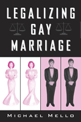

<body bgcolor="#FFFFFF" text="#000000" link="#0000FF" vlink="#CC0000" alink="#CC0000"><center><hr width="350" size="1" align="center" noshade>Lessons from the first states to grapple with gay marriage legislation<hr width="350" size="1" align="center" noshade><p><a href="https://cdcshoppingcart.uchicago.edu/Cart/ChicagoBook.aspx?ISBN=9781592130788&&PRESS=temple" target="_top">Buy this book!</a> | <a href="https://cdcshoppingcart.uchicago.edu/Cart/Cart.aspx?PRESS=temple" target="_top">View Cart</a> | <a href="https://cdcshoppingcart.uchicago.edu/Cart/Cart.aspx?PRESS=temple" target="_top">Check Out</a></p><p></p></center><!--none//--><h1>Legalizing Gay Marriage</h1>
<H2><!-- Foreword by David L. Chambers --></H2>
<h3>Michael Mello, foreword by David Chambers</h3>
<P>cloth 1-59213-078-X $68.50, Jun 04, <FONT COLOR=#990033>Out of Stock Unavailable</FONT>
<br>paper 1-59213-079-8 $29.95, Jun 04, <FONT COLOR=#990033>Available</FONT>
<br>Electronic Book 1-59213-798-9 $29.95 <FONT COLOR=#990033>Out of Stock Unavailable</FONT>
<BR> 352 pp
6x9
</P><BLOCKQUOTE><I>"As the debate over gay marriage is reigniting the culture wars, understanding the interaction between the courts and the legislatures in Vermont&#151the first state to recognize gay civil unions&#151is more important than ever. Drawing on newspaper reports, letters to the editor, legislative hearings, and polls, Michael Mello offers a richly detailed account of the political response to the Vermont Supreme Court's gay marriage decision. In the process, he casts new light on a debate that is now consuming America."</i>
<br>&#151<b>Jeffrey Rosen</b>, author of <i>The Unwanted Gaze</i> and <i>The Naked Crowd</i><i></I></BLOCKQUOTE>
<p>Every day seems to bring news of legal challenges to existing marriage laws and the constitutionality of any form of union for same-sex partners. In this timely and accessible book, Michael Mello argues that the public debates and political battles that have divided Vermont and Massachusetts will be repeated across the country as state after state confronts the issue of legalizing gay marriage.
<p>Michael Mello examines recent landmark decisions in state and federal high courts granting civil rights protections to homosexuals. In Vermont, the Supreme Court's recommendation that legislators recognize the "common humanity" that links all individuals irrespective of sexual identity and consider the question of same-sex marriage resulted in the first state legislation to establish civil union. In Massachusetts, the court's ruling that gay marriage is a right protected by the state constitution has plunged the legislature into a contentious debate about a constitutional amendment. In both states, as in California and New York, public discussion of equal civil protections for gays and lesbians soon become mired in contending views of morality, religion, social mores, and the sanctity of heterosexual marriage.
<p>Mello regards the widespread and virulent opposition to any form of same-sex unions as proof that in Vermont, as elsewhere, homosexuals are indeed a "despised minority" in need of the law's protection. Thus, civil union laws represent only a partial victory because they create a separate and inherently unequal category of relationships for gay people. Mello's analysis of the issues provides an invaluable guide to the battles being waged in state legislatures and by politicians at the national level.
<BR>&nbsp;<h2>Excerpt</h2><P>Excerpt available at <a href="http://www.temple.edu/tempress">www.temple.edu/tempress</a></p>
<BR>&nbsp;<h2>Reviews</h2>
<p><i>"Mello's on-the-ground account of the political and social climate surrounding the Baker decision is thorough and compelling. He invites the reader into the daily media spin and focuses his lens on both the opinion of regular Vermonters and that of individual state legislators on the question of civil unions and marriage equality for same-sex couples."</i>
<br>&#151<b>Michael Adams</b>, Director of Education and Public Affairs, Lambda Legal
<p><i>"Mello's book on the struggle for civil unions in Vermont is a salvo in the gay marriage wars...his legal analysis is cogent."</i>
<br>&#151<b><i>The New York Law Journal</i></b>
<p><i>"What sets this book apart from most others about gay marriage is that it engages the particularities of the situation as opposed to speaking in generalities and theoretical academic jargon. I highly recommend this work to scholars, instructors, and students interested in engaged critique of the law."</i>
<br>&#151<b><i>Argumentation and Advocacy</i></b>
<p><i>"Professor Mello provides a timely, accessible, and even moving account of how Vermont became the first state to institute gay civil unions. ...[he] offer[s] a compelling story and a sophisticated analysis of legal and political change."</i>
<br>&#151<b><i><a href="http://www.bsos.umd.edu/gvpt/lpbr/subpages/reviews/mello1204.htm" target="new">Law & Politics Book Review</a></i></b>
<p><i>"[Mello's] pride in the Green Mountain State adds an original and often disarming touch to his book."</i>
<br>&#151<b><i>The Times Literary Supplement</i></b>
<p><i>"Details such as this put the human interest back into the story as told by Mello, and help convey to the reader the excitement and impact of these events on the people of Vermont.... The book is a valuable analysis of a very important series of events in the history of the struggle for lesbian and gay civil rights, and of the political process in the United States."</i>
<br>&#151<b><i>Contemporary Sociology</i></b>
<p><i>"The book provides a richly detailed ethnographic account of a court decision, the backlash against the decision, the legislative response to the issues ordered in the case, the political compromise of civil unions, and how this compromise both addresses and avoids the locus of social change."</i>
<br>&#151<b><i>The Journal of Sociology and Social Welfare</i></b>
<p><i>"For [Mello], same-sex marriage is a straightforward civil rights issue, and he draws convincing parallels with older battles against statutes prohibiting interracial marriage.... a poignant picture emerges of average Americans vilified and denied the most conventional of goals, marriage."</i>
<br>&#151;<b><i>Qualitative Sociology</i></b>
<BR>&nbsp;<h2>Contents</h2><P>
<p>Series Foreword
<br>Foreword
<br>Acknowledgments
<br>1. Vermont: A Preview of America's War over Same-Sex Civil Marriage
<br>2. The Baker Decision: A Legitimate Exercise in Constitutional Adjudication
<br>3. Backlash Against Gays and Lesbians: A Despised Minority in Vermont
<br>4. Vermont's "Third Way": Enacting Civil Unions as an Alternative to Civil Marriage
<br>5. The Choice: What's Wrong with Vermont's Civil Marriage Substitute
<br>6. Conclusion: Three Years After
<br>Appendix: Vermont Supreme Court Decision for Baker v. State
<br>Notes
<br>Index
</P><BR>&nbsp;<H2>About the Author(s)</H2>
<table><tr><td valign="top"><img src="/tempress/authors/1732_au1.gif" height="90" width="75"></td><td width="100%" valign="middle"><p><b>Michael Mello</b> is Professor of Law at Vermont Law School and the author of five books on capital punishment, including <i>The Wrong Man: A True Story of Innocence on Death Row</i> and <i>Deathwork: Defending the Condemned</i>.</P></td></tr></table>
<BR><H2>Subject Categories</H2>
<p><A HREF="/tempress/sexual.html" TARGET="_top">Sexuality Studies/Sexual Identity</a>
<BR><A HREF="/tempress/law.html" TARGET="_top">Law and Criminology</a>
<BR><A HREF="/tempress/political.html" TARGET="_top">Political Science and Public Policy</a>
</p>
<BR><h2 class="inpageheading">In the series</H2>
<P><I><a href="http://www.temple.edu/tempress/america.html" onMouseOver="window.status='Click for other books in this series!'; return true;" onMouseOut="window.status=''; return true;" target="_top">America in Transition: Radical Perspectives</a></i>, edited by Gary L. Francione.
</p><p><I>America in Transition: Radical Perspectives</I>, edited by Gary L. Francione, presents radical interdisciplinary critiques of U.S. social institutions. The books included will analyze and interpret issues of class, race, gender, sexual orientation, ability, and species and suggest solutions for the problems they raise as we enter the twenty-first century.</p>
<p align="center"><a href="https://cdcshoppingcart.uchicago.edu/Cart/ChicagoBook.aspx?ISBN=9781592130788&&PRESS=temple" target="_top">Buy this book!</a> | <a href="https://cdcshoppingcart.uchicago.edu/Cart/Cart.aspx?PRESS=temple" target="_top">View Cart</a> | <a href="https://cdcshoppingcart.uchicago.edu/Cart/Cart.aspx?PRESS=temple" target="_top">Check Out</a></p><p><font face="Arial" size="1"><a href="copyright.html" onMouseOver="window.status='Web Copyright Policy';return true;" onMouseOut="window.status=''" title="Web Copyright Policy">&copy;</a> 2015 <a href="http://www.temple.edu" target="new" onMouseOver="window.status='Link to Temple University home page';return true;" onMouseOut="window.status=''" title="Link to Temple University home page">Temple University</a>. All Rights Reserved. http://www.temple.edu/tempress/titles/1732_reg.html</font></p>